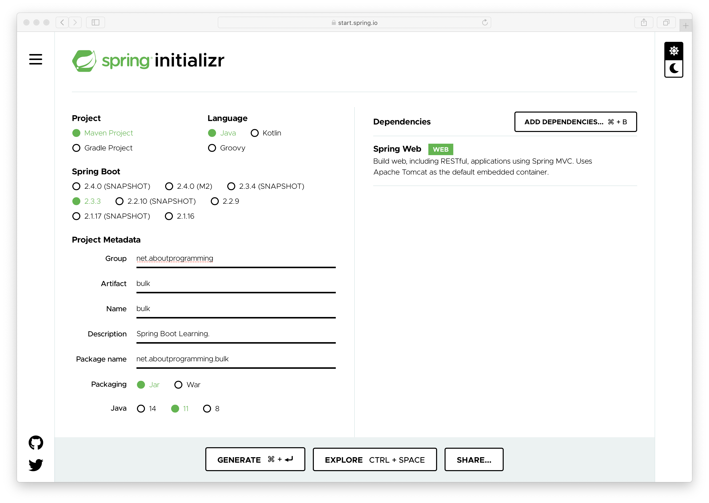
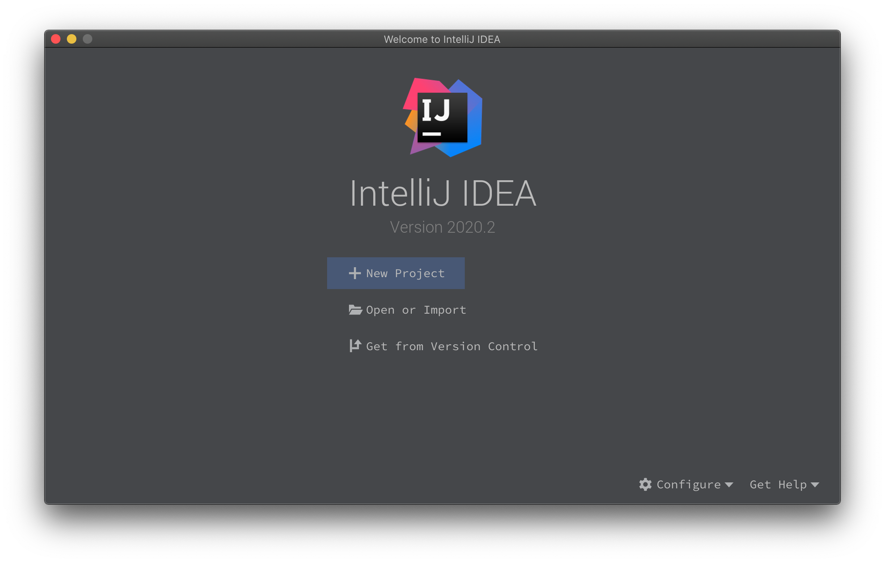

编程这点事
您好，欢迎来到编程这点事站点。扫码关注公众号获取更多精彩内容。
关注并发编程、分布式编程、微服务架构等领域。内容起于编程而不止于编程。
创建第一个Spring Boot项目
访问 Spring Boot 官方的项目初始化工具：https://start.spring.io/
选择相应的构建工具、语言、SpringBoot版本等信息，如下图所示：

当前项目只选择了
spring-boot-starter-web依赖包。点击下方的 GENERATE 按钮会自动开始生成项目并下载到本地
将下载好的项目
zip包解压，并使用 IDEA Open Or Import 功能打开项目
项目结构如下所示

下载示例代码：https://github.com/aboutprogramming/bulk/releases/tag/v0.1.0